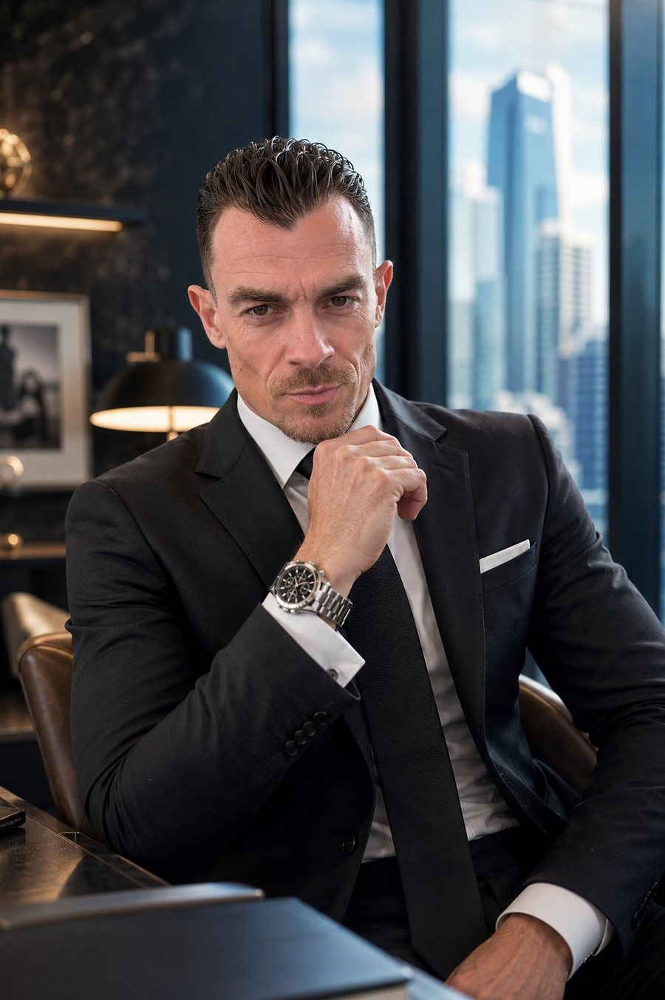

Avant chaque décision, il y a ce qui ne se dit pas. Je le rends lisible : en négociation, à la table d'un deal, dans un recrutement qui n'a pas droit à l'erreur.
Une poignée de main qui hésite. Un silence un peu trop long. Une congruence qui se fissure une fraction de seconde. Les décideurs perdent rarement sur les chiffres. Ils perdent sur ce qu'ils n'ont pas vu venir.
Mon métier : voir ce que les autres ratent.
Chaque mission est sur mesure. On part de votre situation, jamais d'un forfait. Voici les portes d'entrée les plus fréquentes.
Briefing comportemental d'un interlocuteur ou d'une table avant une réunion décisive : M&A, levée, contrat. Vous entrez en connaissant le terrain.
J'observe en direct, sur place ou à distance ; débrief immédiat. Vous repartez avec la carte du jeu réel.
Au-delà du CV : congruence du discours, signaux de risque, motivations réelles d'un cadre dirigeant ou d'un futur associé.
Avant un rendez-vous ou une décision à fort enjeu, je vous prépare : lecture de la situation, ajustement de votre posture, angles d'approche. Vous avancez avec un temps d'avance.
Lecture des rapports de pouvoir, des alliances et des tensions au sein d'un board ou d'un comité de direction.
Pour vous. Comment vous êtes perçu, vos angles morts non-verbaux, votre impact réel dans la pièce.
Rien d'ésotérique dans ma lecture. Elle repose sur la convergence de plusieurs disciplines rigoureuses et sur un protocole de profilage éprouvé sur le terrain, pendant des années, avant de l'être auprès de mes clients.
L'ensemble des méthodes reconnues d'analyse comportementale et la matrice des socio-types, pour structurer ce qui resterait sinon une simple impression.
Les travaux de chercheurs sur le visage, la voix et le corps : micro-expressions, charge cognitive, marqueurs de stress et signaux de congruence.
Onze ans à lire les intentions avant les mots, dans un contexte où une erreur de lecture ne pardonne pas.
Un protocole de profilage affiné aux côtés d'un formateur de référence et validé sur plus de 10 000 personnes.
Aucune boule de cristal. Une convergence de sciences, éprouvée par l'observation.

Onze ans en environnement militaire à lire les intentions avant les mots. Un passage par l'hôtellerie de luxe, où la lecture de l'autre est un art silencieux. Aujourd'hui, conseiller comportemental discret auprès de décideurs au Luxembourg et en France.
Je ne transmets pas ce que j'ai lu dans les livres. Je transmets ce que j'ai vécu sur le terrain.
Dites-moi l'enjeu en deux lignes. Je vous réponds personnellement, sous 24 heures.